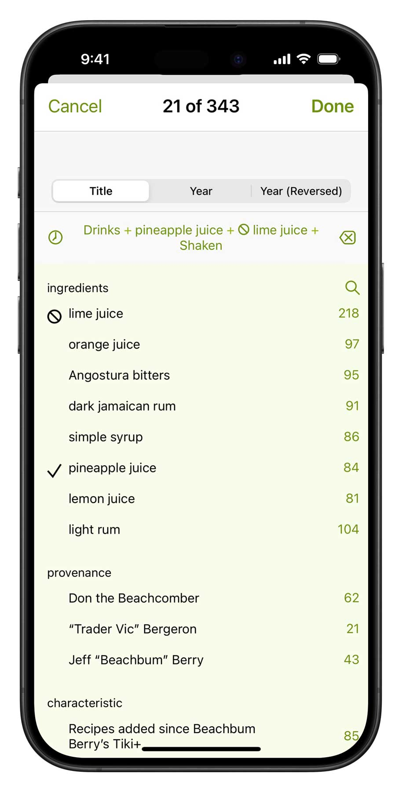

★★★★★ by PSpreitz, Thu, Jun 16, 2022
I have learned so much from this app, both from the historical notes about the cocktails and from the amazing amount of information it offers about the various ingredients. You can create an inventory of ingredients you have on hand and then search by “drinks you can make” (or drinks where you may be missing one or two ingredients). I also love the fact that for the most iconic cocktails it has several different recipes, showing the evolution of the cocktail through the decades and as it appeared in different venues.
These are the recipes you’re looking for
Since 2014, Total Tiki has been the master database for exotic drinks, with over 320 (and growing) recipes researched and curated by historian Jeff “Beachbum” Berry. You’ll find authoritative recipes for for the Zombie, Mai Tai, Painkiller, and Scorpion, but also scores of less-known, brilliant concoctions of the 1940s, -50s, -60s and -70s, and dozens of delicious, contemporary formulations that point the way to the future. Total Tiki is also the perfect complement to Beachbum Berry’s seminal books, such as Sippin’ Safari and Potions of the Caribbean.
Ace Pilot
Aku-Aku Gold Cup
Aku-Aku Lapu
Aloha Cocktail
Ancient Mariner
Ankle Breaker
Bali Bali
Bali Hai
Banana Daiquiri
Bandicoot
Barbancourt Rum Cup
Baron Samedi
Bay Roc Special
Beachbum
Beachbum’s Arrival
Beachbum’s Own
Beachcomber’s Gold (Original)
Beachcomber’s Gold (Chicago)
Beachcomber’s Gold (Final)
Beachcomber’s Punch
Beachnik
Bermuda Rum Swizzle
The Best Year
Big Bamboo
Blackbeard’s Ghost
Blood of the Kapu Tiki
Blue Dolphin
Blue Gardenia
Blue Hawaii
Bolo
Boo Loo
Bourbon Special
Bum Barrel
Bum’s Rush
Burma Shave
Captain Vadrna’s Grog
Captain’s Grog
Caribbean Punch
The Caribbean
Caribe Welcome
Carioca Hawaiian Cocktail
Castaway
Cesar’s Rum Punch
Cherie Valentino
Cherry Blossom Punch
Chi Chi
Chief Lapu Lapu
Chimp In Orbit
Cinerama Luau Punch
Cobra (Kon-Tiki)
Cobra’s Fang (Original)
Cocoanut Grove Cooler
Cocoanut Grove
Coconaut
Coconut Kallaloo
Coconut Willie
Colibri
Colonel Beach’s Plantation Punch
Colonial Grog
Coronado Luau Special
Cou-Cou-Comber
Cream Gin Fizz
Crucian Banana Squash
Cruzan Confusion
Cuba Kula
Davy Jones’ Lager
Dead Bastard
Dead Reckoning
Deadbeat Daiquiri
Demerara Cocktail
Demerara Dry Float
Derby Daiquiri
Designated Diver
Doctor Funk
Don the Beachcomber’s Coffee Grog
Donga Punch
Don’s Beach Planter
Don’s Own Grog
Don’s Special Daiquiri
Dr. Wong
Drake’s Plunder
Duke’s Pearl
Dying Bastard
Eastern Sour
El Diablo
Enchanted Catnip
Flaming Coffee Grog
Fog Cutter
Fogg Cutter
Frangipani
Frohito
Fu Manchu
Gantt’s Tomb
Garrett’s Maitini
Ginger & Lychee Caipirissima
Glass Bottom Boat
Gold Cup
Golden Dream
Golden Gecko
Golden Stag
Golden Wave
Hai Karate
Halekulani Cocktail
Happy Buddha
Hart Of Darkness
Hawaii Kai Treasure
Hawaiian Eye
Hawaiian Room
Hawaiian Sunset
Headhunter
Hell in the Pacific
Hitler’s Jitters
Honolulu Cocktail
Hot Buttered Rum (Volcano House)
Hot Buttered Rum (Pub & Prow)
Hot Zombie
Hotel Nacional Special
Hurricane Buster
Hurricane Punch
Hurricane
Island Barrel
Iuka’s Grogg
Jaguar
Jamoca
Jasper’s Jamaican
Jasper’s Rum Punch
Jet Pilot (Steve Crane)
Jim’s Special
Jump Up and Kiss Me
Jungle Bird
Kama’aina
Kamehameha Rum Punch
Kapu Kai
Kava Bowl
Kikuya Lapu
Kiliki Cooler
Kiwi’s Nest Grog
Kona Cocktail
Krakatoa
La Florida Cocktail
La Florida Daiquiri Number 3
La Florida Daiquiri Number 4
Lady of Singapore
Lani-Honi
Last Rites
Lei Lani Volcano
Lioness
Little Polynesian
London Sour
Lovely Lovely
Luau Coconut
Luau Daiquiri
Lychee Nut Daiquiri
M-One
Macadamia Nut Chi Chi
Mai Tai Swizzle
Mai Tai (Original)
Mai Tai (Royal Hawaiian)
Mai Tai (Kon-Tiki)
Mango Cooler
Manoa
Manta Ray
Mara-Amu
Marlin
Martiki
Martinique Swizzle
The Master Ninja
Mauna Kea Kiaha
Max-Tai
Mezcal Mule
Miehana
Missionary’s Downfall
Molokai Mule
Montego Bay
Mr. Bali Hai
Munich Sour
Myrtle Bank Punch
Myrtle Bank Punch
Mystery Gardenia
Mystic Lamp
Navy Grog
Nesmith Carioca
Never Say Die
New Day
Night Cap
Nui Nui
Oahu Gin Sling
Octopus
Okonkulukooler
Old Fashioned Voodoo
Omar’s Delight
Otto’s Grotto
Outrigger
Pago Pago Cocktail
Pago Pago Punch
Pahoehoe
Painkiller
Palace Court Daiquiri
Palm Breeze
Panorama Punch
Paradise Cooler
Pearl Diver
Pearl Diver’s Punch
Pegleg Punch
Penang Afrididi #1
Petion
Pieces of Eight
Pinky Gonzalez
Piña Paradise
Planet of the Apes
Plantation Daze
Planter’s Punch (Don the Beachcomber)
Planter’s Punch (Dick Moano)
Planter’s Punch (Skipper Kent)
Planter’s Punch (Improved Traditional)
Planter’s Punch (Stephen Remsberg)
Poipu Beach Boogie Board
Pololu
Polynesian Paralysis
Polynesian Remedy
Polynesian Spell
Port Au Prince
Port Light
Port Light
Puka Punch
Puka-Puka Punch
Punky Monkey
Pupule
Q. B. Cooler
Queen’s Park Super Cocktail
Queen’s Park Swizzle
Queen’s Road Cocktail
Rain Killer
Rangoon Gimlet
Roman Twist
Royal Bermuda Yacht Club Cocktail
Royal Daiquiri
Royal Hawaiian Cocktail
Rum Barrel (Don the Beachcomber)
Rum Barrel (Ports O’ Call)
Rum Barrel (Steve Crane)
Rum Cow
Rum Julep
Rum Keg
Rum Runner
Rum Tropical
Rum, Gum & Lime
Sage Bon Vivant
Samoan Fog Cutter
Samoan Typhoon
Saturn
Schooner
Scorpion Bowl (Original)
Scorpion (Individual)
Scorpion (Kelbo’s)
Scorpion (Luau)
Sea Of Cortez
Shark’s Tooth
Shark’s Tooth
Shrunken Bum
Shrunken Skull
Siboney
Sidewinder’s Fang
Singapore Sling (Don the Beachcomber)
Singapore Sling (Raffles, 1950s)
Singapore Sling (Raffles/Doctor Cocktail)
Skin Diver
Skull & Bones
Sleeping Giant
Sloppy Joe’s Special
Slow Crawl To Death
Sol Y Sombra
South Pacific Punch
South Sea Cooler
Spindrift
St. Lucian
Starboard Light
Strip and Go Naked
Stumblebum
Suffering Bastard
Suffering Bastard (Trader Vic)
Sumatra Kula
Sunakora
Sundowner
Suriname Swizzle
Sven-Tiki
Sweet Dream
Taal
Tahitian Rum Punch
Tapa Punch
Tasman Sea
Test Pilot (Don the Beachcomber)
Three Dots and a Dash
Tiger Shark
Tiki Bowl
Tiki Bowl
Tokyo Daiquiri
Tortuga
Trade Wind Cocktail
Trader Vic Grog
Trader Vic Punch
Tradewinds
Trinidad Green Swizzle
Tropic Cocktail
Tropical Itch (Hawaiian Village)
Tropical Itch
Tropical Itch (Kon-Tiki)
USS Wondrich
Vicious Virgin
Vicious Virgin #2
Viking Fog Cutter
Virgin Island Kula
Volcano Bowl
Von Tiki
Voodoo Grog
Voyager
Western Sour
White Cloud
Whitecap
Yellow Boxer
Yellow Submarine
Zadaran Storm
Zombie (Original “1934”)
Zombie (Tonga Room)
Zombie (“1950” version)
Zombie (“1956” version)
Zombie (Aku-Aku restaurant)
Zombie (South Seas)
Zombie (Simplified)
Beach Lamour
Easy-to-use power
Search by name or ingredient just like in your address book. Surf through recipes and ingredients by tapping hyperlinks.
More surgical questions are just a few taps away: filter all the recipes by any combination of ingredients and keywords.
Ingredient aware
Our drink recipe apps have the smartest ingredient system. Simply check off what you have and the app will tell you which drinks you can make, including legit substitions.
★★★★★ by Cessna928, Fri, Nov 5, 2021
I can’t remember the last time I liked an app enough to actually review it. But, this is one of the rare few that I actually want people to know about. This app not only gives you a huge number of tiki drink recipes, but also helps you adapt your collection of rums and other liquors to each recipe. Lots of other recipes leave you hanging when you can’t find the exact rum they want, but this app helps you a cross reference similar brands and types of rum to find a suitable alternative.
Simple tools of great utility
Flag recipes you want to try, populate your favorites list, create a new list for planning the drinks for your next party. Add your own notes to any recipe.
Part of a talented family
Total Tiki inter-operates with its seven sibling recipes apps that you can add at any time.

Set up your free sync account and all these apps can share your ingredient inventory, lists and journal notes. In the same manner, you can have Total Tiki on both your iPhone and iPad, and they’ll stay in sync. You can even access your sync data with a web browser.